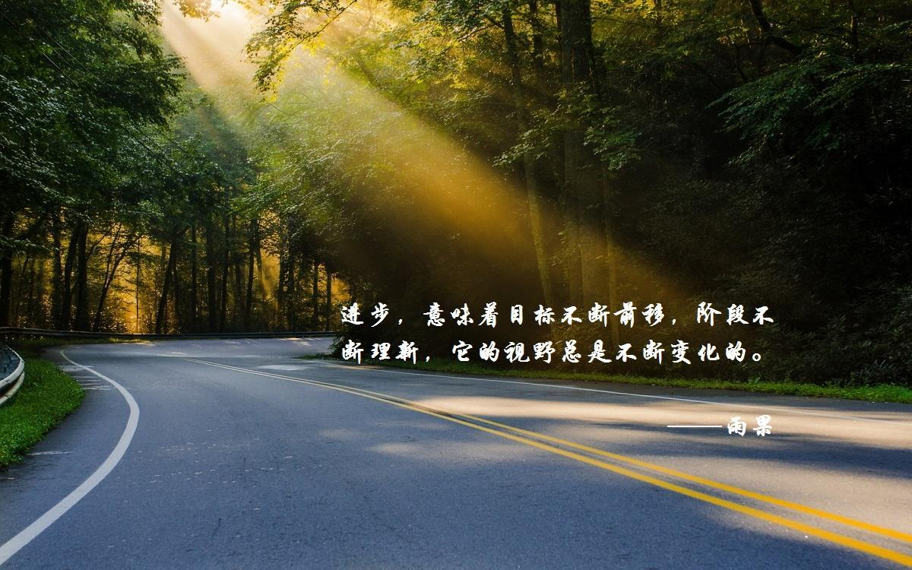

要不断的努力，才能成为更好的自己

20多岁的我们，丧失了最纯真的好奇心。我们醉心于那些表面的、外在的、甚至是虚无的成就感。我们每天循环着尝试使用各种工具解决各种问题，以此来换取一些微薄的酬劳。我们会用各种不同的编程手法、不同的思维来解决同一个问题，以此来判别你与竞争对手的水平高低；我们也会彼此竞争式的学习更多的语言、更好的框架、更新的技术，可我们所谓的学习，却仅仅只是“会用”。时间久了，累了，厌倦了，就觉得没有意思了。你迷茫了。迷茫是再正常不过的了。跟着形式跑，看不到事物的本质，你永远会觉得疲倦。
绝美云南星空延时和照片合集